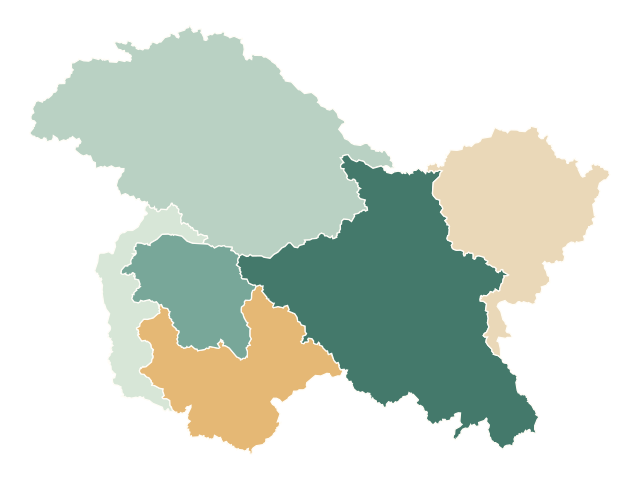
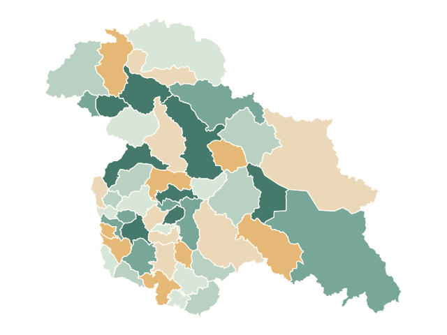
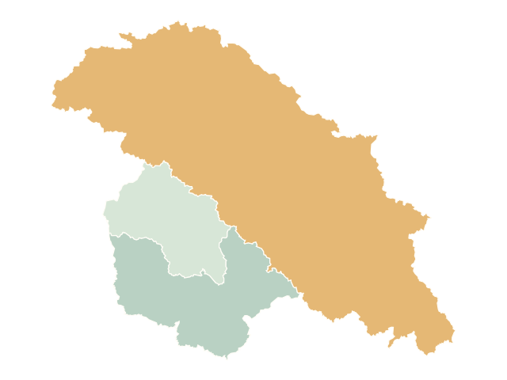

Choose your view
Start with regions, districts or province groupings. Focus on the areas that matter to your story.
Bring your numbers to life on the map of Kashmir. Explore its regions, colour its districts, and make something worth sharing.

A little data.
A clearer picture.
Start with a map. Add your data.
The rest is yours to shape.
See the bigger picture across six regions.

Let local differences tell the story.

Explore Kashmir, Jammu and Frontier.
Maps use OpenStreetMap data and approximate, disputed boundaries. District coverage is incomplete. Pre-partition views are custom groupings of modern boundaries, not surveyed historical borders. Read the coverage note.
No account to create. No software to install. Just a canvas and your curiosity.
Start with your dataStart with regions, districts or province groupings. Focus on the areas that matter to your story.
Type values or bring a CSV. Adjust colours, labels, titles, and choose a sum or average.
Download PNG or SVG images, export the data, or save a project file to pick up later.
A useful tool should be easy to begin with—and easy to understand.
Yes. All current editor features are available without registration or a subscription. Open the studio and start creating.
Editing and exports happen in your browser. We do not upload your CSVs or projects. The studio saves a local browser copy where available. Download a project file for a reliable backup; clearing browser data can remove local work.
Choose Save project in the studio, move the downloaded JSON file to your other device, then choose Open project. There are no accounts or cloud project storage.
PNG images, editable SVG images, CSV values and GeoJSON. You can also save an editable project with its styles and snapshots.
The studio includes six regions and 49 source districts from May–July 2026 snapshots. Changthang is missing; Leh may retain pre-split territory. Aksai Chin lacks district geometry. The three province groupings use modern boundaries; Kashmir Division approximates the Valley, and Frontier inherits the existing GB/Shaksgam and Ladakh/Siachen map grouping. These are not assertions of sovereignty or verified historical borders. The optional LoC is source-mapped and approximate.
Boundary data © OpenStreetMap contributors, ODbL.
Start with a place. Make it a story.
Open the free map studio